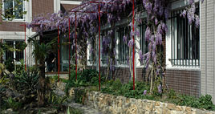
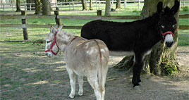
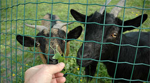

|
Présentation du pôle Externat Médico-Educatif |
 |
|
Mardi, 14 Décembre 2010 14:28 |

|
L’Externat Médico-Educatif (EME) reçoit en moyenne 130 garçons et filles externes et internes âgés de 6 à 18 ans dans l’enceinte de l'Etablissement public médico-social de Claye-Souilly, ceci à temps complet ou à temps séquentiel.
Certains sont déficients intellectuels ou souffrent de troubles envahissants du développement, de troubles du comportement et de la conduite.
|
|
Les objectifs principaux visés au cours de la prise en charge sont la recherche de la meilleure insertion sociale, un épanouissement personnel et pour certains une orientation professionnelle personnalisée.
La notification de la MDPH est le point de départ du processus d’admission. Etablissement public, l’E.P.M.S. accueille tout jeune ayant ce document et adapte l’accompagnement à ses besoins.
Le pôle est situé au centre ville de CLAYE-SOUILLY et implanté au cœur d’un espace de verdure. Les infrastructures sont adaptées aux handicaps des jeunes et offrent des espaces de vie spatieux ainsi que des lieux d’apprentissage fonctionnels.
|

|
Dans le cadre de l’accompagnement proposé au sein de l’EME, il convient de trouver une juste mesure, entre des sollicitations trop faibles ou trop rares et des interventions trop intensives en prévoyant des ajustements. |

|
|
Avec son Unité professionnelle ,son Unité éducative, son Unité pédagogique et son secteur médico-psychologique L’EME est :
Un lieu ressource pour d’autres structures, en proposant des temps séquentiels et des stages de découverte en son sein.
- Les ULIS (unité localisée d’inclusion scolaire)
- Les SESSAD (service d’éducation spéciale à domicile)
- Les ITEP (instituts éducatifs, thérapeutiques et pédagogique)
Un lieu d’ouverture vers d’autres structures notamment en ce qui concerne les lieux d’apprentissage comme :
- Les collèges ou écoles primaires
- Les CFA (centres de formation d’apprentis)
- Les ESAT (établissements et services d’aide par le travail)
- Les entreprises partenaires
|
 |
|
|
Mise à jour le Jeudi, 22 Octobre 2015 17:48 |